MfG
TTT
TramTram Typeface
Font of a tram dispay board. It is truly remarkable to look at how the individual letters are constructed. The formation of curves and diagonals is only possible indirectly due to the square pixel areas. Nevertheless, the typeface with its rather low legibility accompanies us every day, which makes it even more interesting to take a closer look at it.
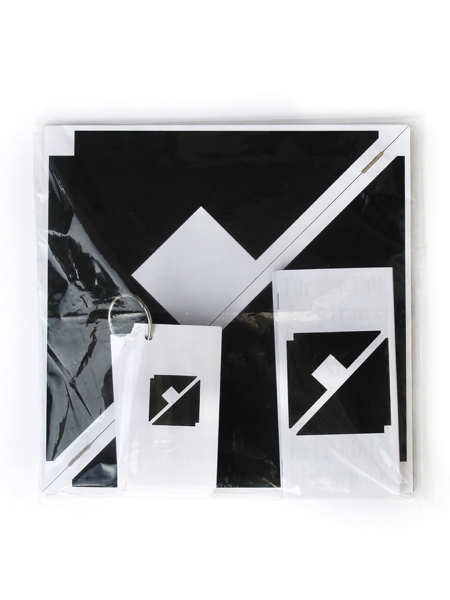
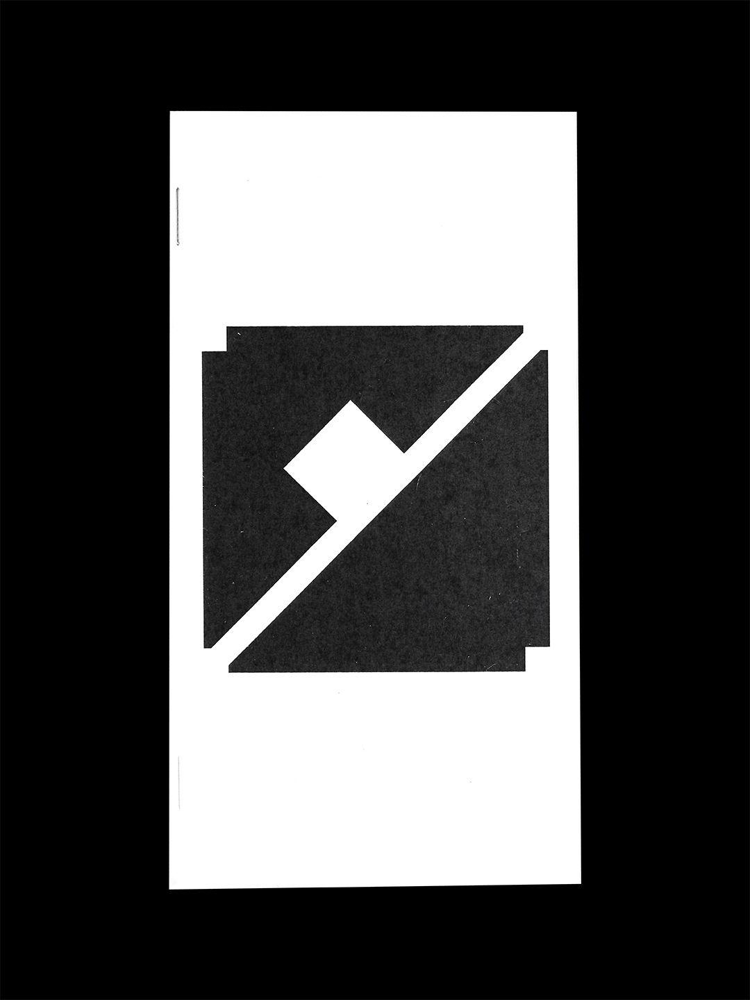
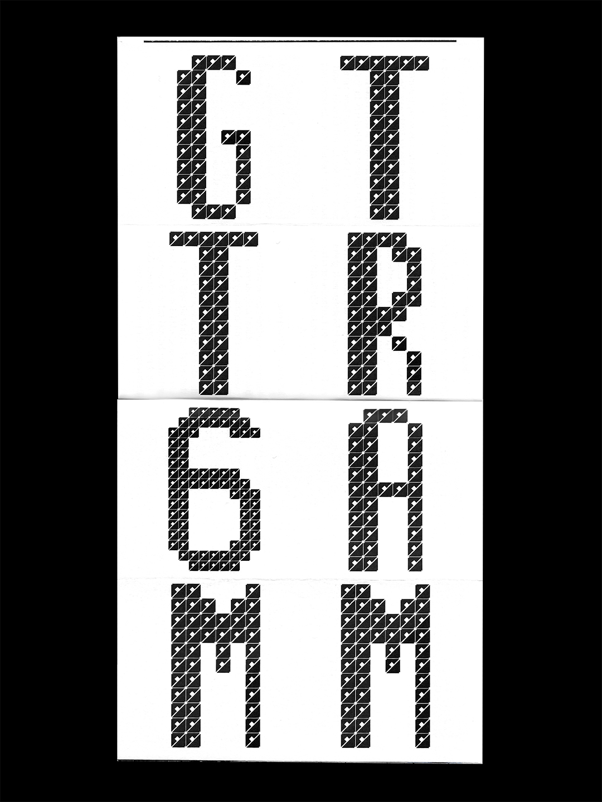
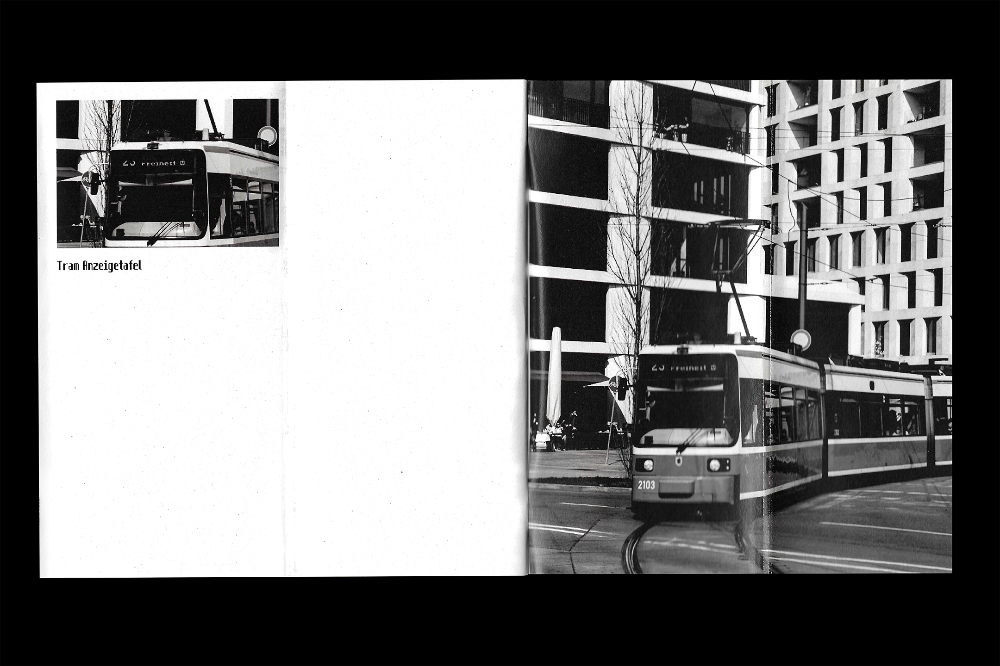
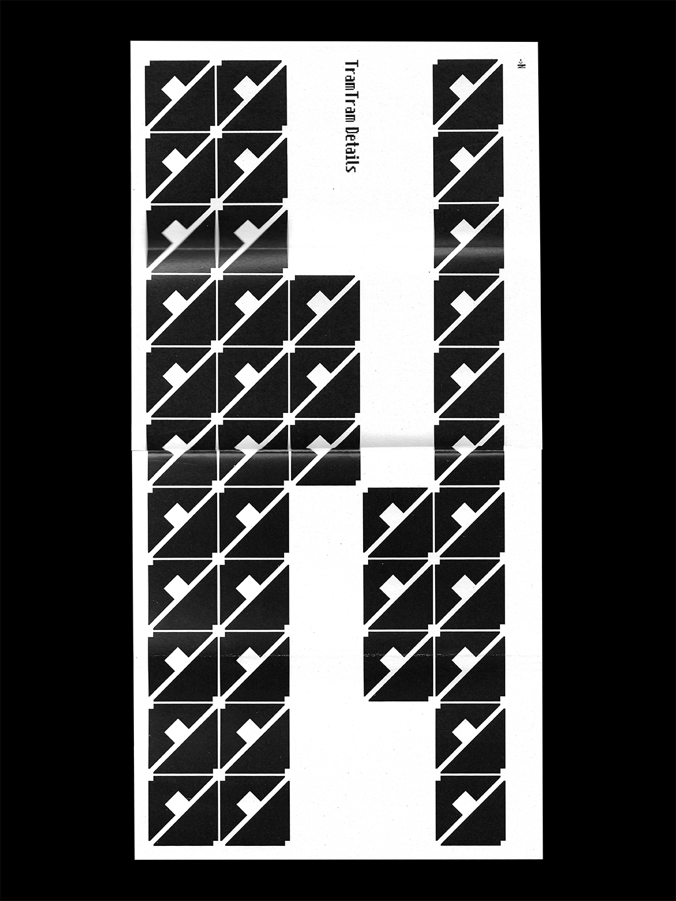
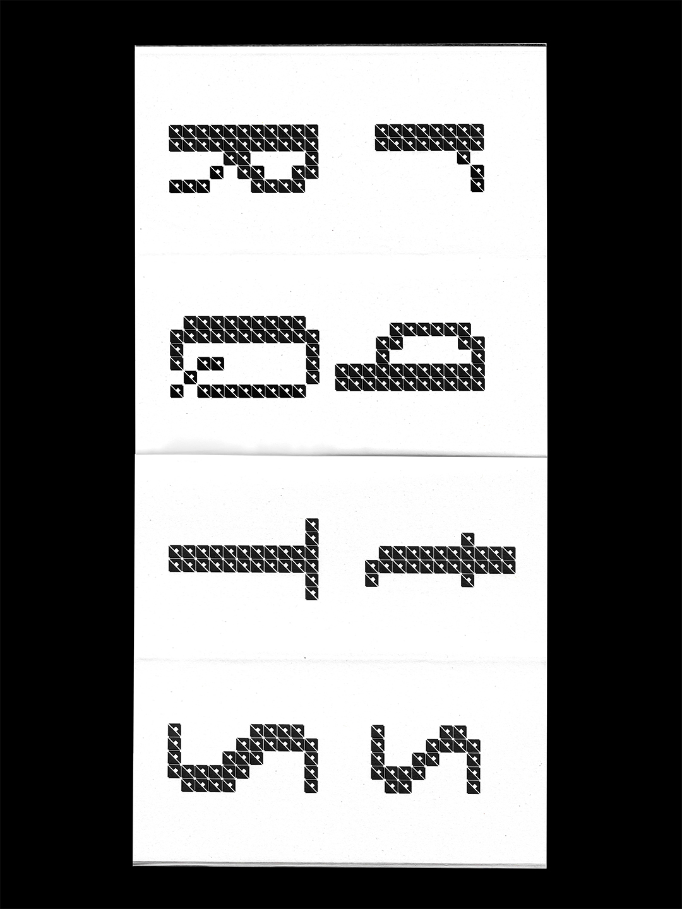
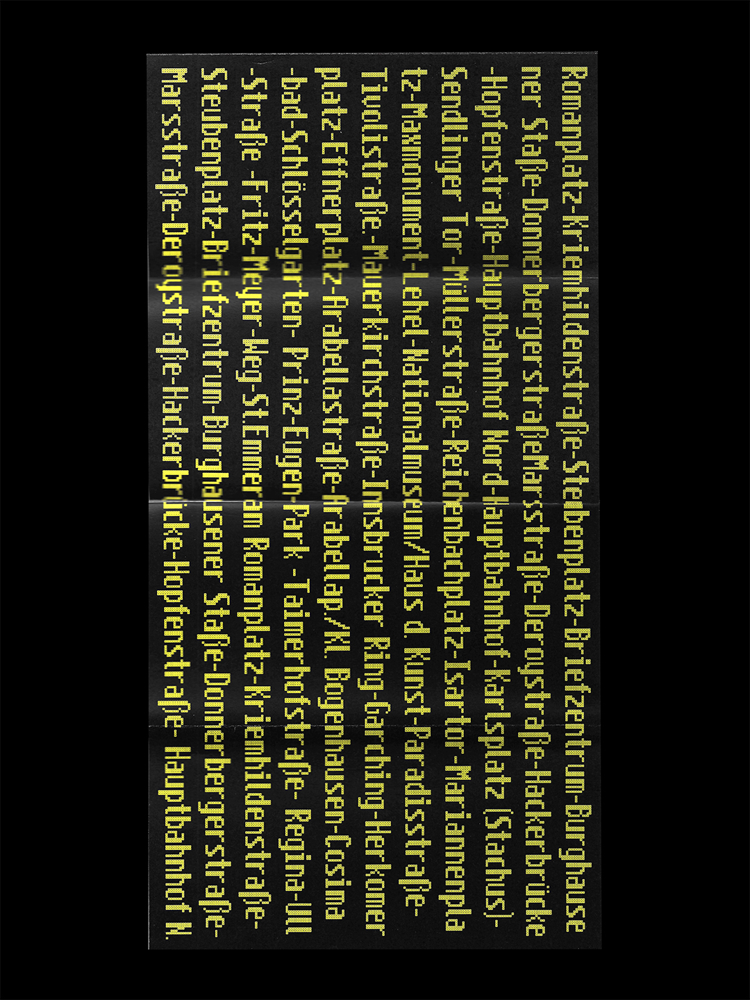
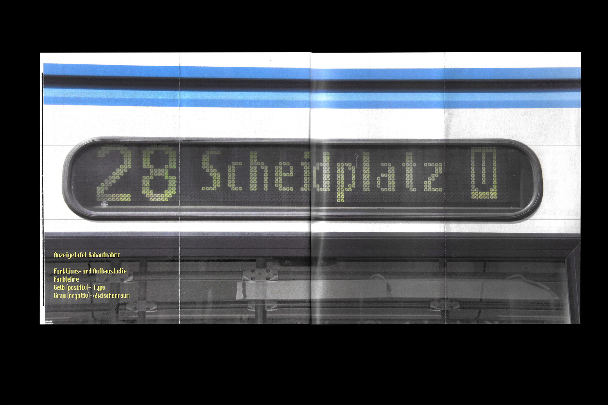
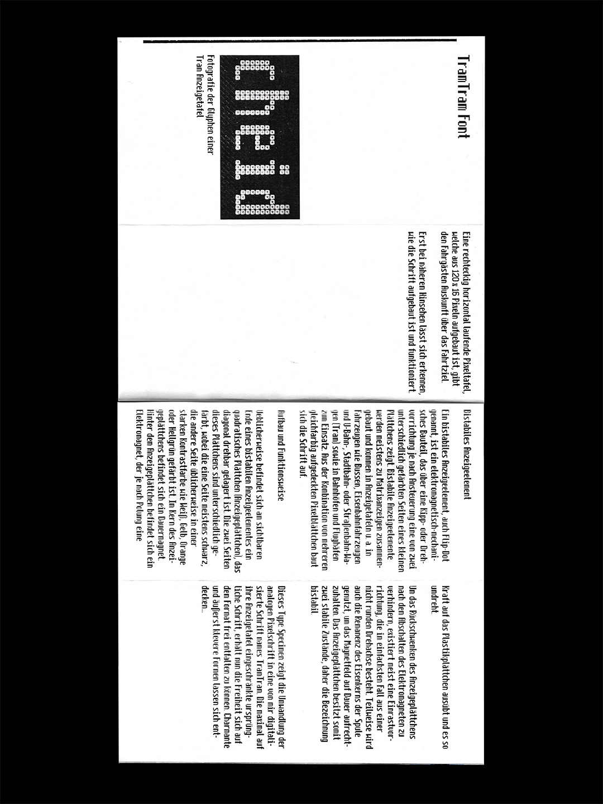
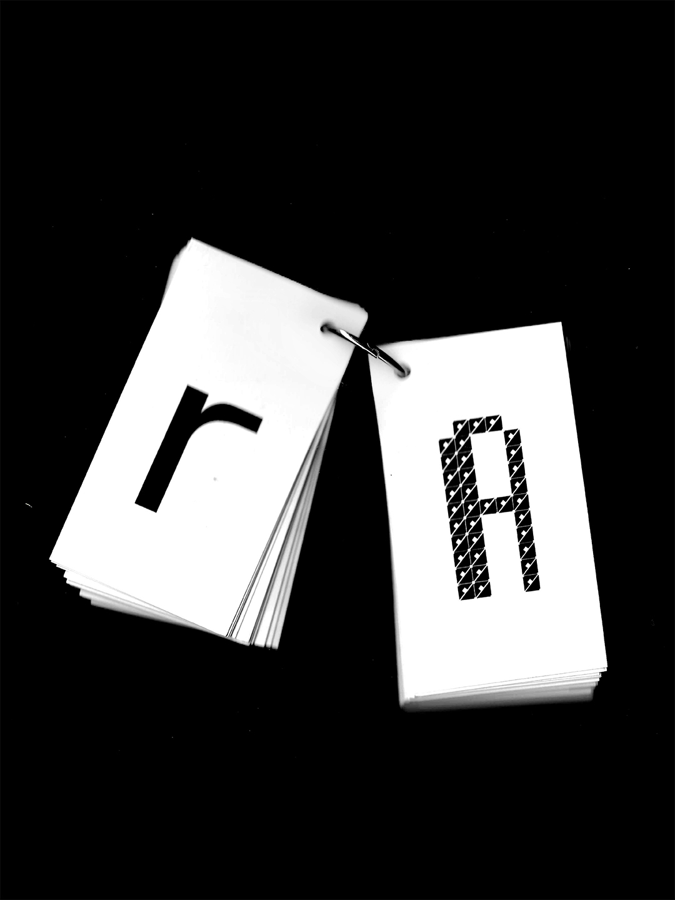
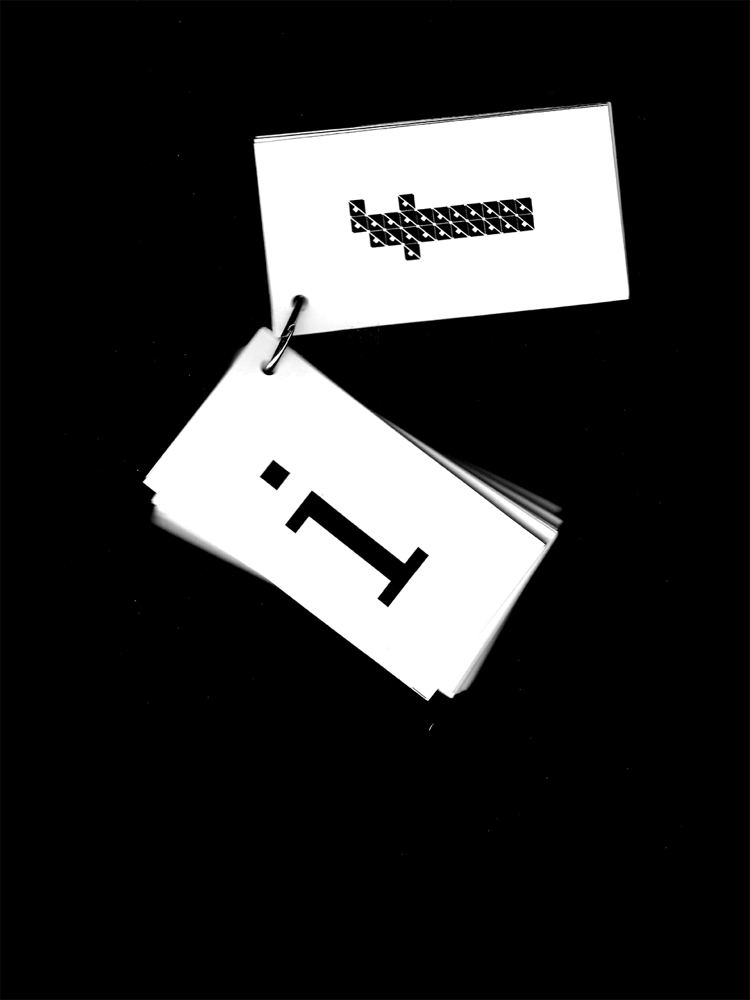